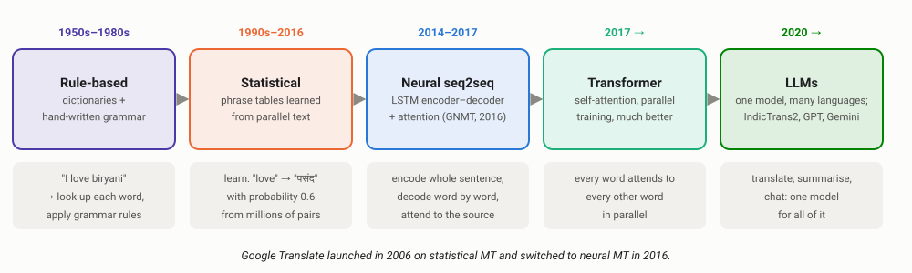
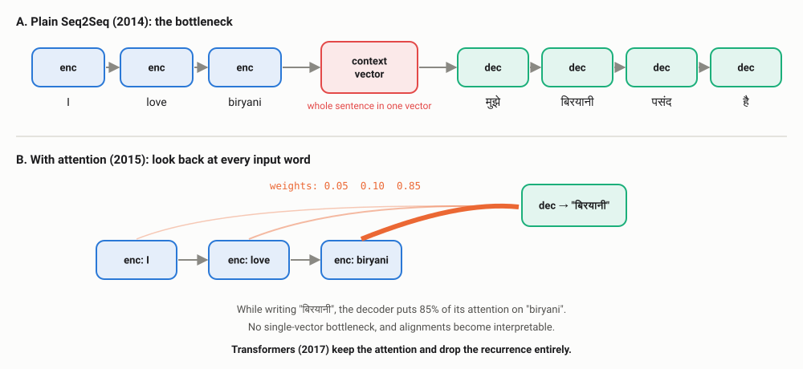
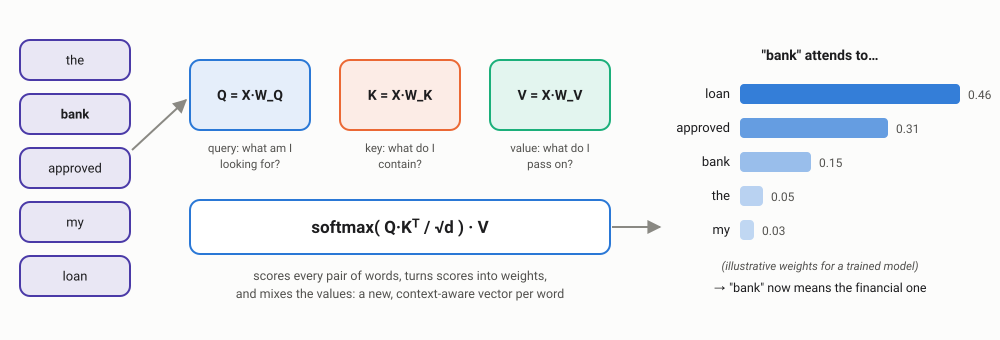
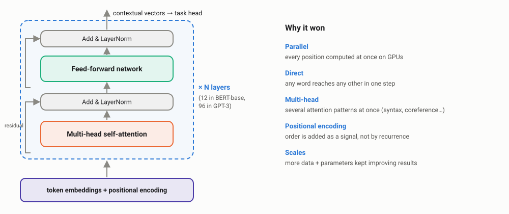
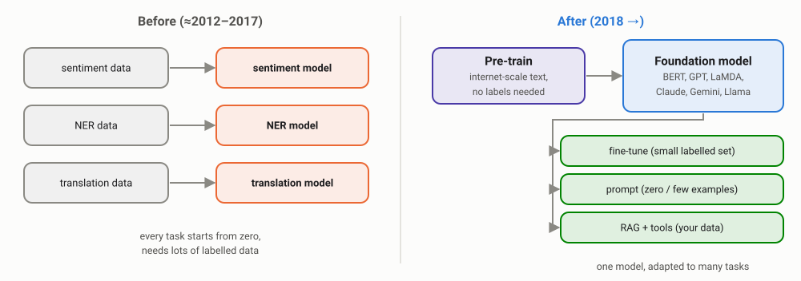
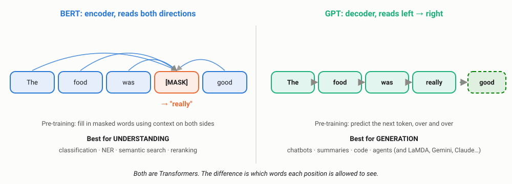
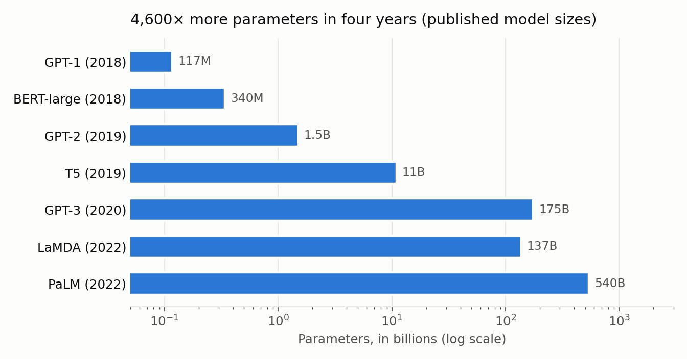
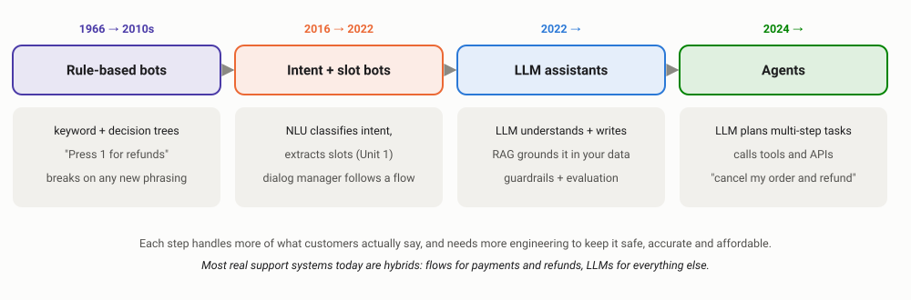
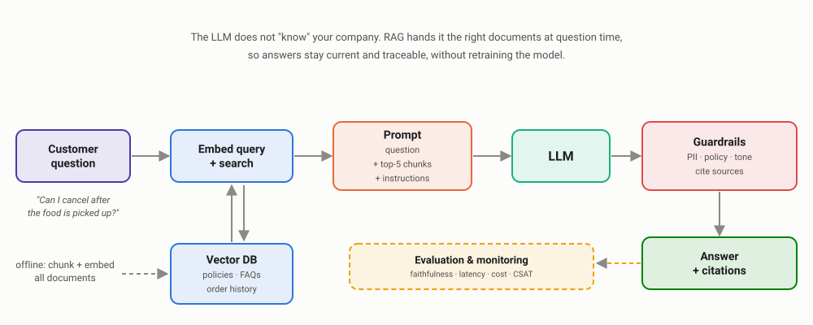

Machine Translation & the Paradigm Shift
From encoder–decoders and attention to Transformers, BERT, LaMDA and GPT, and how today's conversational AI is actually built. The unit where everything from Units 1–4 comes together.
00Why machine translation still matters
Machine translation (MT) is the problem that drove most of the big ideas in modern NLP: encoder–decoders, attention and the Transformer were all invented to translate better. It is also a very practical problem, especially in India.
E-commerce and food apps translate product listings and menus into regional languages; banks and government services offer support in Hindi, Marathi, Tamil and more; customer-support teams translate incoming tickets so one team can handle many languages. Open models such as AI4Bharat's IndicTrans2 (2023) cover all 22 scheduled Indian languages.
01Five eras of machine translation

The 1954 Georgetown–IBM experiment from Unit 1 was a translation demo. Statistical MT learned phrase tables from millions of translated sentence pairs (for example, parliamentary proceedings published in two languages). Neural MT replaced the whole pipeline with a single network trained end to end.
02Seq2Seq: the encoder–decoder
A sequence-to-sequence model (Sutskever et al., 2014) uses two RNNs from Unit 4: an encoder reads the source sentence into a vector, and a decoder generates the translation one token at a time, like the language model in Unit 4, but conditioned on that vector.

Three terms you will hear in every MT and LLM team
| Term | Meaning | Why it matters |
|---|---|---|
| Teacher forcing | During training, the decoder is fed the correct previous word, not its own guess | Much faster, more stable training; the same trick trains GPT-style models |
| Greedy decoding | At each step, pick the single most likely next token | Fast, but an early mistake cannot be undone |
| Beam search | Keep the best k partial translations at each step, pick the best complete one | Standard for translation; costs roughly k× more compute |
The bottleneck in panel A is the problem: a long sentence has to be squeezed into one fixed-size vector, and translation quality drops as sentences get longer. Attention (Bahdanau et al., 2014; published 2015) fixed it by letting the decoder look at all encoder states and decide which ones matter for the current output word.
03Hands-on: a seq2seq model with attention
Full English–Hindi translation needs millions of sentence pairs and GPUs. But the exact same architecture solves a smaller "translation" task that data teams face constantly: normalising messy dates. Support tickets, KYC forms and invoices contain "7th of march, 2011", "05.11.2003", "oct 2, 2019"… and the database needs 2011-03-07.
We train a character-level GRU encoder–decoder, once without attention and once with it, on 20,000 generated examples (about 25 seconds each on a laptop CPU):
import random, datetime, torch, torch.nn as nn
random.seed(0); torch.manual_seed(0)
# ---------- 1. Data: messy human dates -> ISO format (a real data-cleaning task) ----------
MONTHS = ["january", "february", "march", "april", "may", "june", "july",
"august", "september", "october", "november", "december"]
def messy(d):
m, m3 = MONTHS[d.month - 1], MONTHS[d.month - 1][:3]
suf = "th" if 11 <= d.day <= 13 else {1: "st", 2: "nd", 3: "rd"}.get(d.day % 10, "th")
return random.choice([
f"{d.day} {m3} {d.year}", f"{d.day} {m} {d.year}", f"{m3} {d.day}, {d.year}",
f"{d.day}{suf} {m} {d.year}", f"{d.day:02d}/{d.month:02d}/{d.year}", f"{d.day}-{d.month}-{d.year}",
f"{m} {d.day} {d.year}", f"{d.day:02d}.{d.month:02d}.{d.year}", f"{d.day}{suf} of {m}, {d.year}",
])
def sample():
d = datetime.date(2000, 1, 1) + datetime.timedelta(days=random.randint(0, 12000))
return messy(d), d.isoformat()
train = [sample() for _ in range(20000)]
SRC = sorted(set("".join(s for s, _ in train))) ; TGT = list("0123456789-") + ["<s>", "</s>"]
si = {c: i + 1 for i, c in enumerate(SRC)}; ti = {c: i for i, c in enumerate(TGT)}
def enc_src(batch):
L = max(len(s) for s in batch)
return torch.tensor([[si.get(c, 0) for c in s] + [0] * (L - len(s)) for s in batch])
def enc_tgt(batch):
return torch.tensor([[ti["<s>"]] + [ti[c] for c in t] + [ti["</s>"]] for t in batch])
# ---------- 2. Model: GRU encoder + GRU decoder with (Luong-style) attention ----------
class Seq2Seq(nn.Module):
def __init__(self, H=128, attention=True):
super().__init__()
self.attention = attention
self.src_emb = nn.Embedding(len(SRC) + 1, 32, padding_idx=0)
self.tgt_emb = nn.Embedding(len(TGT), 32)
self.encoder = nn.GRU(32, H, batch_first=True)
self.decoder = nn.GRU(32, H, batch_first=True)
self.out = nn.Linear(2 * H if attention else H, len(TGT))
def forward(self, src, tgt_in):
enc_out, h = self.encoder(self.src_emb(src)) # enc_out: one vector per source char
dec_out, _ = self.decoder(self.tgt_emb(tgt_in), h) # decoder starts from the encoder summary
if not self.attention:
return self.out(dec_out), None
scores = dec_out @ enc_out.transpose(1, 2) # each output step scores every input char
scores = scores.masked_fill((src == 0).unsqueeze(1), -1e9) # ignore padding
weights = scores.softmax(-1) # attention weights
context = weights @ enc_out # weighted mix of input chars
return self.out(torch.cat([dec_out, context], -1)), weights
@torch.no_grad()
def translate(self, text):
src, y, out = enc_src([text]), torch.tensor([[ti["<s>"]]]), ""
for _ in range(12): # greedy decoding, one char at a time
logits, w = self(src, y)
nxt = logits[0, -1].argmax().item()
if TGT[nxt] == "</s>": break
out += TGT[nxt]; y = torch.cat([y, torch.tensor([[nxt]])], 1)
return out, w
def train_model(attention, epochs=3):
model = Seq2Seq(attention=attention); opt = torch.optim.Adam(model.parameters(), lr=2e-3)
for epoch in range(epochs):
random.shuffle(train)
for i in range(0, len(train), 64):
b = train[i:i + 64]
src, tgt = enc_src([s for s, _ in b]), enc_tgt([t for _, t in b])
logits, _ = model(src, tgt[:, :-1]) # teacher forcing
loss = nn.functional.cross_entropy(logits.reshape(-1, len(TGT)), tgt[:, 1:].reshape(-1))
opt.zero_grad(); loss.backward(); nn.utils.clip_grad_norm_(model.parameters(), 1.0); opt.step()
return model
test = [sample() for _ in range(1000)]
for attention in [False, True]:
model = train_model(attention)
acc = sum(model.translate(s)[0] == t for s, t in test) / len(test)
print(f"attention={attention!s:<5} exact-match accuracy on 1,000 new dates = {acc:.1%}")
for text in ["26 sep 2026", "october 2, 2019", "7th of march, 2011", "05.11.2003", "12 sitambar 2026"]:
print(f"{text!r:<22} -> {model.translate(text)[0]}")
torch.save(model.state_dict(), "dates_attention.pt")attention=False exact-match accuracy on 1,000 new dates = 67.6% attention=True exact-match accuracy on 1,000 new dates = 100.0% '26 sep 2026' -> 2026-09-26 'october 2, 2019' -> 2019-10-02 '7th of march, 2011' -> 2011-03-07 '05.11.2003' -> 2003-11-05 '12 sitambar 2026' -> 2026-09-12
- Same data, same training time, one change: attention takes exact-match accuracy from 67.6% to 100%. Without it, the whole input must survive in one vector; with it, the decoder copies the day, month and year from wherever they sit in the input.
- "12 sitambar 2026", the Hindi spelling of September, was never in the training data. The character-level model still maps it to month 09, probably because it shares letters with "september". Do not count on that kind of luck in production: test on real, messy inputs.
Full scripts: dates_seq2seq.py · plot_attn.py (draws the heatmap below).
04Attention, visualised
Because attention weights are just numbers between 0 and 1, we can look inside the trained model and see where it looked while writing each output character:

- While writing the year, the model attends to the digits of "2011".
- While writing the month "3", it looks at the end of the word "march": that is where it has recognised which month it is.
- While writing the day "7", it jumps back to the very first character.
Nobody programmed these alignments. The model learned them because they reduce the loss.
Attention maps like this were one of the first practical tools for debugging neural translation: when a system dropped or repeated a word, engineers could see which source words it had (or had not) attended to. Be careful, though: in large Transformers with many layers and heads, attention weights are only a partial explanation of why a model made a decision.
05Evaluating translation: BLEU and its limits
BLEU (Papineni et al., 2002) scores a translation by counting how many of its n-grams (Unit 2!) also appear in a human reference translation. It is cheap, automatic and was the standard MT metric for two decades. It also has well-known blind spots:
from nltk.translate.bleu_score import sentence_bleu, SmoothingFunction
reference = "the food arrived cold and the delivery was late".split()
candidates = {
"exact copy": "the food arrived cold and the delivery was late",
"same meaning": "the meal came cold and delivery was delayed",
"word salad": "the delivery the food was late cold and arrived",
"wrong meaning": "the food arrived hot and the delivery was early",
}
smooth = SmoothingFunction().method1
for name, cand in candidates.items():
score = sentence_bleu([reference], cand.split(), smoothing_function=smooth)
print(f"{name:<14} BLEU = {score:.2f} {cand}")exact copy BLEU = 1.00 the food arrived cold and the delivery was late same meaning BLEU = 0.08 the meal came cold and delivery was delayed word salad BLEU = 0.10 the delivery the food was late cold and arrived wrong meaning BLEU = 0.43 the food arrived hot and the delivery was early
A correct paraphrase scores 0.08. A translation that says the food was hot and early, the opposite of the complaint, scores 0.43, five times higher. BLEU measures word overlap, not meaning.
| Metric | How it works | Used for |
|---|---|---|
| BLEU | n-gram overlap with references | Quick regression checks; comparing versions of the same system |
| chrF | Character n-gram overlap | Better for languages with rich word forms (Hindi, Tamil) |
| COMET and similar | A neural model trained to predict human quality judgements | Closer to human opinion; now common in research and industry |
| Human evaluation | Bilingual reviewers rate adequacy and fluency | Launch decisions, high-stakes domains (legal, medical) |
This is the same lesson as Unit 3's intrinsic vs extrinsic evaluation, and it is even more important for LLMs: automatic scores are useful for catching regressions, but launch decisions need human review on real samples, especially where a meaning error can cost money or harm a person.
06Transformers: attention is all you need
In 2017, Vaswani et al. at Google asked: if attention does the useful work, why keep the RNN at all? The Transformer removes recurrence entirely. Every word attends to every other word in the same sentence (self-attention), and all positions are processed in parallel.

Self-attention in 15 lines of NumPy
Here is the core formula with real GloVe vectors from Unit 3. To keep it simple we skip the learned projection matrices (a real Transformer learns W_Q, W_K, W_V):
import numpy as np, gensim.downloader as api
glove = api.load("glove-wiki-gigaword-50")
def self_attention(words):
X = np.array([glove[w] for w in words]) # (n_words, 50): one static vector per word
Q, K, V = X, X, X # a real Transformer learns 3 projection matrices here
scores = Q @ K.T / np.sqrt(X.shape[1]) # how relevant is each word to each other word
weights = np.exp(scores) / np.exp(scores).sum(1, keepdims=True) # softmax per row
return weights, weights @ V # new vector = weighted mix of all words
def cos(a, b): return float(a @ b / np.linalg.norm(a) / np.linalg.norm(b))
for sentence in ["i sat on the river bank", "the bank approved my loan"]:
words = sentence.split()
weights, out = self_attention(words)
bank = out[words.index("bank")] # "bank" after attending to its context
top = sorted(zip(words, weights[words.index("bank")]), key=lambda x: -x[1])[:3]
print(f"{sentence!r}")
print(" bank attends to:", [(w, round(float(p), 2)) for w, p in top])
print(f" similarity to 'water' = {cos(bank, glove['water']):.2f} to 'money' = {cos(bank, glove['money']):.2f}")
print(f"static GloVe 'bank': water = {cos(glove['bank'], glove['water']):.2f} money = {cos(glove['bank'], glove['money']):.2f}")'i sat on the river bank'
bank attends to: [('bank', 0.79), ('on', 0.06), ('the', 0.06)]
similarity to 'water' = 0.42 to 'money' = 0.67
'the bank approved my loan'
bank attends to: [('bank', 0.74), ('loan', 0.14), ('the', 0.06)]
similarity to 'water' = 0.38 to 'money' = 0.69
static GloVe 'bank': water = 0.34 money = 0.64
An honest result. One layer of untrained attention moves "bank" towards "water" in the river sentence (0.34 → 0.42) and pulls in "loan" in the finance sentence, so the same word now has two different vectors in two contexts. But the shift is small: "bank" mostly attends to itself. Real Transformers learn the Q, K, V projections so that words attend to the context that matters, and stack 12 to 100+ layers of this. That is what makes their contextual vectors so much better than static embeddings.

07The paradigm shift: BERT, LaMDA, GPT
The Transformer made one idea practical at scale: pre-train once on huge amounts of unlabelled text, then adapt to any task. This is the transfer learning you saw with GloVe in Unit 3, but now the whole network is pre-trained, not only the word vectors.


| Model | From | Type | What it changed |
|---|---|---|---|
| BERT (2018) | Encoder | Fine-tune one pre-trained model for classification, NER, search. Became the default NLU model in industry; Google Search began using it in 2019. | |
| GPT, GPT-2, GPT-3 (2018–2020) | OpenAI | Decoder | Next-token prediction at growing scale. GPT-3 showed that a large enough model can do new tasks from a few examples in the prompt, with no fine-tuning. |
| T5 (2019) | Encoder–decoder | Framed every NLP task, including translation, as text-to-text. | |
| LaMDA (2021–22) | Decoder, dialogue-tuned | A 137B-parameter model built specifically for open-ended conversation, with a focus on safety and grounding answers in external sources. It powered the first version of Google's Bard chatbot in 2023. | |
| ChatGPT (Nov 2022) | OpenAI | Decoder, instruction-tuned | A GPT model fine-tuned with human feedback to follow instructions. Brought LLMs to the general public. |

Try the models yourself (in Colab)
The Hugging Face transformers library gives one-line access to thousands of pre-trained models. Run this in Google Colab; the first run downloads each model:
!pip install transformers sentencepiece
from transformers import pipeline
# BERT: fill in the blank using context from BOTH sides
fill = pipeline("fill-mask", model="bert-base-uncased")
print(fill("The food was cold, so I asked for a [MASK]."))
# Sentiment classifier: a BERT-family model fine-tuned on movie reviews
sentiment = pipeline("sentiment-analysis", model="distilbert-base-uncased-finetuned-sst-2-english")
print(sentiment(["Delivery was late but the biryani was amazing", "Great, cold biryani again"]))
# English -> Hindi translation with an open MT model
translate = pipeline("translation", model="Helsinki-NLP/opus-mt-en-hi")
print(translate("Your order will arrive in twenty minutes."))
# GPT-2: generate text one token at a time
generate = pipeline("text-generation", model="gpt2")
print(generate("The best thing about working in NLP is", max_new_tokens=25))We have not printed outputs here because they change with model versions. Things to look for when you run it: does the sentiment model catch the sarcasm in "Great, cold biryani again"? (A model fine-tuned on movie reviews often does not.) How natural is the Hindi? How quickly does GPT-2, a small 2019 model, drift off-topic compared with a modern LLM?
08NLP in AI: conversational AI
Remember Samantha from the opening scene of Unit 1? Here is how the industry actually got from rule-based bots towards her:

A modern support assistant for our food-delivery app does not rely on the LLM's memory. It uses retrieval-augmented generation (RAG): search the company's own documents (with the BM25 and vector search from Units 2 and 3), put the relevant passages into the prompt, and ask the LLM to answer from them.

| Production problem | What teams do |
|---|---|
| Hallucination: confident, wrong answers | Ground answers in retrieved documents, require citations, say "I don't know" when retrieval finds nothing |
| Stale knowledge | RAG over live documents instead of retraining the model |
| Privacy | Mask PII before prompts (the regex and NER from Unit 1), use private deployments for sensitive data |
| Safety & policy | Input and output guardrails; hard-coded flows for refunds and payments; escalation to humans |
| Cost & latency | Route easy queries to small models or the TF-IDF classifier; cache answers; limit prompt length (tokens = money, Unit 1) |
| Quality over time | Evaluation sets of real questions, LLM-as-judge plus human review, monitoring of user feedback |
The newest step is agents: the LLM does not just answer, it decides which tools to call (check order status, issue a refund, create a ticket) and in what order. Protocols such as the Model Context Protocol (MCP) standardise how models connect to tools and data. Agents make it even more important to get the fundamentals right: every tool call is structured data extracted from language, which is exactly the NLU problem from Unit 1.
09Choosing an approach in industry
Every technique in this course is still a valid choice. The job of an engineer is to pick the simplest one that meets the requirement.
| Approach | Use it when | Cost per request | Example from this course |
|---|---|---|---|
| Rules / regex | Fixed formats, must be 100% explainable | ~free | PAN, phone and order-ID extraction (Unit 1) |
| TF-IDF + linear model | Classification with hundreds–thousands of labels | < 1 ms on CPU | Ticket router, 0.80 accuracy (Unit 2) |
| Embeddings + vector search | Meaning-based search, recommendations | milliseconds | "courier is very slow" search (Unit 3) |
| Small trained seq model | Narrow, well-defined transformation with lots of examples | milliseconds | Date normaliser, 100% accuracy (Unit 5) |
| Fine-tuned Transformer | High-accuracy NLU with thousands of labelled examples | ms, often a GPU | Production intent / NER models |
| Prompted LLM + RAG | Open-ended questions, little labelled data, generation | seconds, paid per token | Support assistant (this unit) |
10Research papers worth discussing
You do not need to read every equation. For each paper, try to answer: what problem did it solve, and where is that idea used in products today?
| Year | Paper | Why it matters in industry |
|---|---|---|
| 2014 | Sequence to Sequence Learning with Neural Networks (Sutskever et al.) | The encoder–decoder behind neural MT, summarisation and chatbots |
| 2014 | Neural Machine Translation by Jointly Learning to Align and Translate (Bahdanau et al.) | Introduced attention, the idea that became the Transformer |
| 2016 | Google's Neural Machine Translation System (Wu et al.) | How neural MT was engineered for production at Google scale |
| 2017 | Attention Is All You Need (Vaswani et al.) | The Transformer: the architecture behind almost every modern language model |
| 2018 | BERT (Devlin et al.) | Pre-train + fine-tune; still widely used for classification, NER and search |
| 2020 | Language Models are Few-Shot Learners (GPT-3, Brown et al.) | Prompting instead of training: the start of the LLM era |
| 2020 | Retrieval-Augmented Generation (Lewis et al.) | The idea behind RAG, the most common enterprise LLM pattern |
| 2021 | LoRA: Low-Rank Adaptation (Hu et al.) | Cheap fine-tuning of large models; how most teams customise open LLMs |
| 2022 | LaMDA: Language Models for Dialog Applications (Thoppilan et al.) | Dialogue-specific training, safety and grounding in external sources |
| 2022 | Training language models to follow instructions with human feedback (InstructGPT, Ouyang et al.) | RLHF: how a raw language model becomes a helpful assistant |
| 2022 | Chain-of-Thought Prompting (Wei et al.) | Asking models to reason step by step improves multi-step answers |
| 2023 | IndicTrans2 (Gala et al., AI4Bharat) | Open, high-quality translation for all 22 scheduled Indian languages |
| 2023 | Lost in the Middle (Liu et al.) | LLMs use information at the start and end of long prompts better than the middle: a practical RAG design lesson |
| 2023 | Mamba (Gu & Dao) | State-space models: recurrence-style efficiency returns for very long sequences (Unit 4) |
Split into groups, one paper each. In five minutes, present: the problem, the key idea in one sentence, and one product that uses it today. It is a great way to practise explaining technical work, which is half of an industry job.
11Try it yourself
Google Colab has PyTorch installed. Download dates_seq2seq.py and try:
- Add a new input format, such as "2011/03/07" or "march 7th", to
messy(). Test the old model on it before retraining. What happens? - Train with 2,000 examples instead of 20,000. How much does attention help now?
- Change the task: normalise Indian phone numbers ("098765 43210", "+91-98765-43210") to "+919876543210".
- Run the Hugging Face pipelines above and collect three failures of each model. Which are data problems, and which are model problems?
Discussion questions
1. Why did the seq2seq model without attention reach only 67.6%, when the same model with attention reached 100%?
Without attention, the entire input has to be compressed into the encoder's final hidden state, and details such as the exact day are easily lost. With attention, the decoder can look directly at the relevant input characters at each output step.
2. A translation with BLEU 0.43 says the opposite of the source. A correct paraphrase gets 0.08. What should a team do?
Use BLEU only for quick regression checks, add meaning-aware metrics such as COMET, and rely on human evaluation for launch decisions, especially in domains where meaning errors are costly.
3. When would you choose BERT over GPT, and vice versa?
BERT-style encoders are efficient and accurate for understanding tasks with labelled data (classification, NER, search ranking). GPT-style decoders are needed for generation (chat, summaries, code) and are convenient when there is little labelled data, because they can be prompted.
4. Your LLM support bot confidently invents a refund policy. What architecture changes reduce this?
Retrieval-augmented generation over the real policy documents, instructions to answer only from retrieved text with citations, an "I don't know / escalate" path when retrieval is weak, guardrails on refund-related answers, and fixed flows (not free text) for actually issuing refunds.
5. Why do many companies still run TF-IDF classifiers and small models when LLMs exist?
Cost, latency, privacy and explainability. A sub-millisecond CPU model handles millions of routine requests almost for free; the LLM is reserved for the cases that actually need it.
12Key takeaways
- Machine translation drove the key ideas of modern NLP: encoder–decoders, attention and the Transformer.
- Seq2seq squeezes the input into one vector; attention removes that bottleneck. In our experiment it took accuracy from 67.6% to 100%.
- Attention weights are inspectable: our model learned by itself to look at "march" when writing "03".
- BLEU measures word overlap, not meaning. Use human evaluation and meaning-aware metrics for real decisions.
- Transformers replace recurrence with self-attention: parallel, direct connections between words, and they scale.
- The paradigm shift: pre-train one foundation model (BERT, GPT, LaMDA), then adapt it by fine-tuning, prompting or RAG.
- Production conversational AI is RAG + guardrails + evaluation + fixed flows for risky actions, increasingly with agents that call tools.
- Pick the simplest approach that meets the requirement: every technique from Units 1–5 is still in production somewhere.
Every modern LLM still starts with tokens (Unit 1), still turns them into vectors (Units 2–3), still predicts the next token one at a time (Units 2 and 4), and uses attention (Unit 5). The fundamentals are not history. They are the foundation.